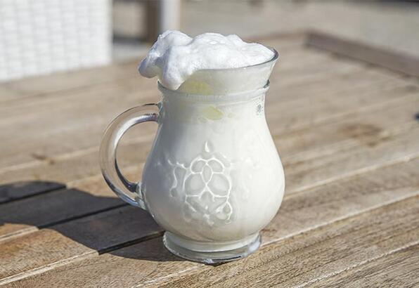
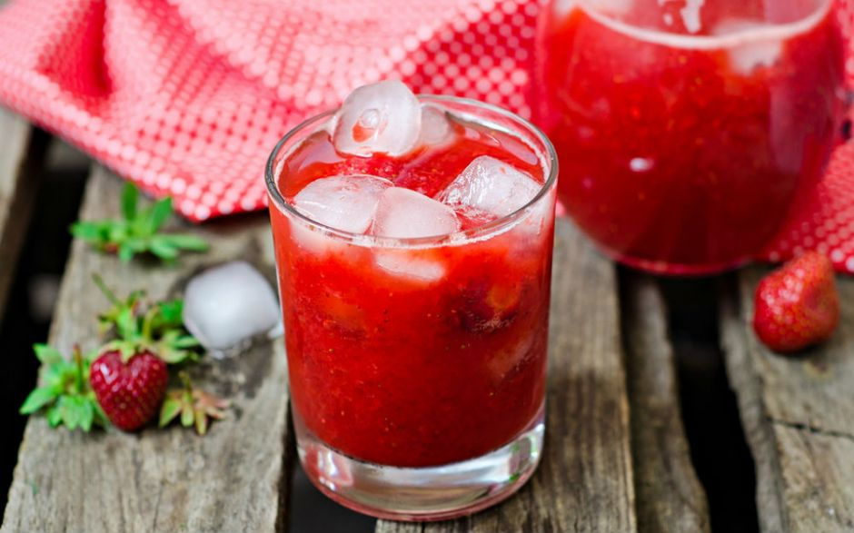
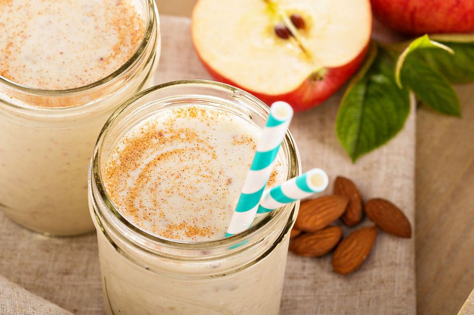
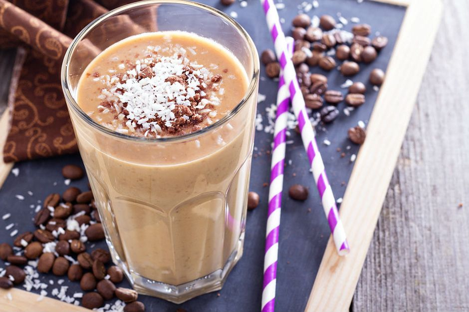

İÇECEKLER
Köpüklü Susurluk Ayranı

Malzemeler
<>4 çorba kaşığı yoğurt
<>2 su bardağı su
<>2 yemek kaşığı süt
<>Tuz
Yapılışı
⚫El blendırı ile yoğurdu çırpın.
⚫İçerisine yavaş yavaş su,süt ve tuzu ekleyin.
⚫Köpürene kadar çırpın.
İşte bol köpüklü susurluk ayranı yapmak bu kadar basit!
Çilekli Limonata

Malzemeler
<>500 gram çilek
<>3 adet limon
<>5 yemek kaşığı toz şeker
<>5 su bardağı su
<>5 adetnane yaprağı
Yapılışı
⚫Bol suda yıkayıp kağıt havlu yardımıyla kuruladığınız çileklerin sap kısımlarını kesin.
⚫Limonların kabuklarını rendenin ince kısmıyla aldıktan sonra sularını sıkın.
⚫Küçük parçalara böldüğünüz çilekleri, taze sıkılmış limon suyu ilavesiyle mutfak robotuna alın.
⚫1 su bardağı suda erittiğiniz toz şeker ve rendelenmiş limon kabuklarını katıp mutfak robotunda püre haline getirin.
⚫Kalan suyu ilave edip karıştırma işlemini birkaç saniye daha sürdürdükten sonra limonata karışımını sürahiye alın.
⚫Buzdolabında soğuttuktan sonra arzuya göre nane yaprakları ve buz küpleri eşliğinde servis edin.
Elmalı Smoothie

Malzemeler
<>1,5 su bardağı süt (arzuya göre laktozsuz)
<>1 adet orta boy kırmızı elma
<>1 yemek kaşığı yoğurt
<>1/2 su bardağı badem içi
<>1/4 tatlı kaşığı tarçın
<>1 tatlı kaşığı bal
Yapılışı
⚫Dört eşit parçaya bölüp çekirdekli kısımlarını çıkardığınız kırmızı elmanın kabuklarını soyun.
⚫Soğuk sütü blendera alın.
⚫Yoğurt, elma dilimleri, badem içi, bal ve tarçını süte ekleyin.
⚫Tüm malzemeleri blenderda püre haline gelene kadar karıştırdıktan sonra bekletmeden soğuk olarak servis edin.
Kahveli Milkshake

Malzemeler
<>400 ml.soğuk süt
<>4 adetbuz kübü
<>2 top kaymaklı dondurma
<>2 top çikolatalı dondurma
<>1 yemek kaşığı granül kahve
<>1 yemek kaşığı pudra şekeri (ya da toz şeker)
Servisi İçin
<> Çikolata ve hindistan cevizi
Yapılışı
⚫Kaymaklı dondurma, pudra şekeri, granül kahve ve sütün yarısını blender kabına alın.
⚫Buz küplerini ekledikten sonra karıştırma işlemini başlatın.
⚫Kıvamının daha yoğun ve hafif pütürlü olması için kalan süt ve çikolatalı dondurmayı katıp karıştırma işlemini kısa bir süre daha sürdürün.
⚫Hazırladığınız milkshake karışımını büyük bardaklara aktarın.
⚫Üzerlerine rendelenmiş çikolata ve Hindistan cevizi serpiştirdikten sonra bekletmeden sevdiklerinizle paylaşın.
Kirazlı Buzlu Çay
Malzemeler
<>1 litre su
<>4 demlik poşet siyah çay
<>1/2 su bardağı esmer şeker
<>1 su bardağı vişne nektarı
<>1 su bardağı kiraz tanesi
<>2 su bardağıkırık buz
Yapılışı
⚫Suyu derin bir tencerede kaynatın. Kaynayan suya poşet siyah çayları salın ve demini vermesi için 15 dakika kadar bekletin.
⚫Demini veren poşet siyah çayları bir kenara alın. Demlenen çaya esmer şekeri katın ve karıştırın.
⚫Çaya lezzetini verecek ve kıvamını arttıracak olan vişne nektarını ilave edin.
⚫Kiraz taneleri ve kırık buzları katıp, son bir kez karıştırdıktan sonra doğal ve ev yapımı buzlu çayın ferahlığını sevdiklerinizle birlikte paylaşarak hissedin.
Muzlu Hurmalı Smoothie

Malzemeler
<>200 ml.az yağlı süt
<>1/2 adetmuz (60 gram)
<>3 adet hurma
<>2 adet bütün ceviz
<>10 gramyulaf kepeği
Yapılışı
⚫Çekirdeklerini çıkardığınız hurmaları küçük küpler halinde doğrayın.
⚫Kabuğunu soyduğunuz muzu dilimleyin. Cevizi küçük parçalar halinde kırın.
⚫Az yağlı süt, yulaf kepeği, muz, hurma ve bütün ceviz parçalarını blender kabına alın.
⚫Tüm malzemeyi yoğun bir kıvam alana kadar çekin. Hazır olan içeceği bekletmeden servis edin.
Bon Appétit !